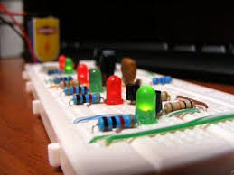
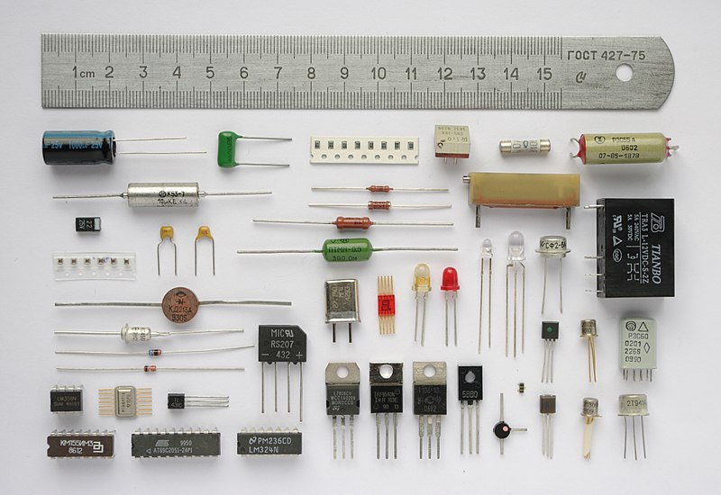

La electrónica es la rama de la física y la ingeniería que se ocupa del estudio, diseño y aplicación de dispositivos y sistemas que utilizan electricidad para procesar información. Se basa en el control de electrones que circulan a través de conductores y semiconductores, permitiendo el funcionamiento de dispositivos que van desde simples luces hasta sistemas complejos como computadoras y satélites.
Los componentes electrónicos son los bloques básicos de construcción de cualquier circuito electrónico. Algunos ejemplos comunes incluyen resistencias, condensadores, transistores y diodos. Estos componentes controlan el flujo de corriente, almacenan energía y actúan como interruptores en los circuitos.
La electrónica está presente en casi todos los aspectos de nuestra vida moderna. Desde dispositivos de comunicación como teléfonos móviles, hasta la automoción, el entretenimiento, la medicina y la automatización industrial. Sin la electrónica, muchos de los avances tecnológicos que disfrutamos hoy en día no serían posibles.